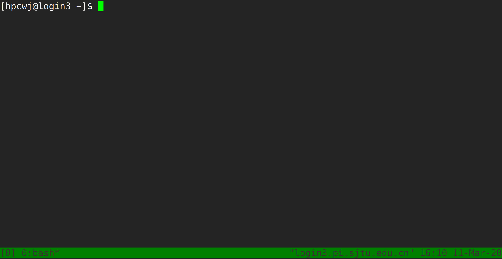

Tmux使用介绍¶
Tmux是一个终端复用器（terminal multiplexer）。如果您有使用screen的经历的话，您可以理解为Tmux是screen的不同实现软件。本教程将讲解Tmux的基础用法。
会话与进程¶
命令行的典型用法是打开终端（terminal）后，在里面输入指令。用户的这种与计算机交互的手段，称为会话（session）。
在会话中，通过命令行启动的所有进程均与会话进程绑定。当会话进程终止时，该会话启动的所有进程也会随之强行结束。
一点最常见的例子就是通过SSH连接到远程计算机。当SSH连接因为网络等原因断开时，那么SSH会话就被终止，这次会话启动的任务也会被强制结束。
为了解决这个问题，一种手段就是用户终端窗口与会话“解绑”。即关闭用户端窗口，仍然维持该会话，进而保证用户进程不变。
Tmux的作用¶
Tmux就是这样一款会话与窗口的“解绑”工具。
（1）它允许在单个窗口中，同时访问多个会话。这对于同时运行多个命令行程序很有用。
（2）它可以让新窗口"接入"已经存在的会话。
（3）它允许每个会话有多个连接窗口，因此可以多人实时共享会话。
（4）它还支持窗口任意的垂直和水平拆分
基本用法¶
安装¶
集群中已经默认安装了Tmux，无须操作。如果您需要在自己的服务器上安装Tmux，请参考以下指令：
# Ubuntu 或 Debian
$ sudo apt-get install tmux
# CentOS 或 Fedora
$ sudo yum install tmux
# Mac
$ brew install tmux
启动与退出¶
直接在终端中键入tmux指令，即可进入Tmux窗口。
$ tmux
上面命令会启动 Tmux 窗口，底部有一个状态栏。状态栏的左侧是窗口信息（编号和名称），右侧是系统信息。
按下Ctrl+d或者显式输入exit命令，就可以退出 Tmux 窗口。
$ exit
快捷键¶
Tmux有大量的快捷键。所有的快捷键都要使用Ctrl+b作为前缀唤醒。我们将会在后续章节中讲解快捷键的具体使用。
会话管理¶
新建会话¶
第一个启动的会话名为0，之后是1、2一次类推。
但是有时候我们希望为会话起名以方便区分。
$ tmux new -s SESSION_NAME
以上指令启动了一个名为SESSION_NAME的会话。
分离会话¶
如果我们想离开会话，但又不想关闭会话，有两种方式。按下Ctrl+b d或者tmux detach指令，将会分离会话与窗口
$ tmux detach
后面一种方法要求当前会话无正在运行的进程，即保证终端可操作。我们更推荐使用前者。
查看会话¶
要查看当前已有会话，使用tmux ls指令。
$ tmux ls
接入会话¶
tmux attach命令用于重新接入某个已存在的会话。
# 使用会话编号
$ tmux attach -t 0
# 使用会话名称
$ tmux attach -t SESSION_NAME
杀死会话¶
tmux kill-session命令用于杀死某个会话。
# 使用会话编号
$ tmux kill-session -t 0
# 使用会话名称
$ tmux kill-session -t SESSION_NAME
切换会话¶
tmux switch命令用于切换会话。
# 使用会话编号
$ tmux switch -t 0
# 使用会话名称
$ tmux switch -t SESSION_NAME
Ctrl+b s可以快捷地查看并切换会话
重命名会话¶
tmux rename-session命令用于重命名会话。
# 将0号会话重命名为SESSION_NAME
$ tmux rename-session -t 0 SESSION_NAME
对应快捷键为Ctrl+b $。
窗格（window）操作¶
Tmux可以将窗口分成多个窗格（window），每个窗格运行不同的命令。以下命令都是在Tmux窗口中执行。
划分窗格¶
tmux split-window命令用来划分窗格。
# 划分上下两个窗格
$ tmux split-window
# 划分左右两个窗格
$ tmux split-window -h
对应快捷键为Ctrl+b "和Ctrl+b %
移动光标¶
tmux select-pane命令用来移动光标位置。
# 光标切换到上方窗格
$ tmux select-pane -U
# 光标切换到下方窗格
$ tmux select-pane -D
# 光标切换到左边窗格
$ tmux select-pane -L
# 光标切换到右边窗格
$ tmux select-pane -R
对应快捷键为Ctrl+b ↑、Ctrl+b ↓、Ctrl+b ←、Ctrl+b →。
窗格快捷键¶
$ Ctrl+b %：划分左右两个窗格。
$ Ctrl+b "：划分上下两个窗格。
$ Ctrl+b <arrow key>：光标切换到其他窗格。<arrow key>是指向要切换到的窗格的方向键，比如切换到下方窗格，就按方向键↓。
$ Ctrl+b ;：光标切换到上一个窗格。
$ Ctrl+b o：光标切换到下一个窗格。
$ Ctrl+b {：当前窗格左移。
$ Ctrl+b }：当前窗格右移。
$ Ctrl+b Ctrl+o：当前窗格上移。
$ Ctrl+b Alt+o：当前窗格下移。
$ Ctrl+b x：关闭当前窗格。
$ Ctrl+b !：将当前窗格拆分为一个独立窗口。
$ Ctrl+b z：当前窗格全屏显示，再使用一次会变回原来大小。
$ Ctrl+b Ctrl+<arrow key>：按箭头方向调整窗格大小。
$ Ctrl+b q：显示窗格编号。